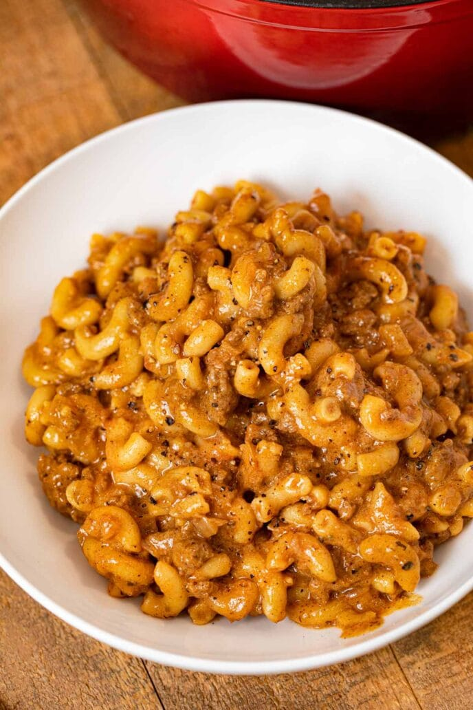

Home Page
Chili Mac

Description
A flavorful variation of traditional Chili Mac. This recipe includes shredded mix of Mexican style 4 cheese. Most of the recipe is done on a stove, but the last 15 minutes are recommended to be done in the oven for a nice melt of the soon to be creamy cheese.
Ingredients
- 1 pound ground beef or turkey
- 1 medium onion, chopped
- 1 green bell pepper, chopped
- 1 (14.5 ounce) can Mexican or chili-style stewed tomatoes, undrained
- ½ cup water
- 1 (1.25 ounce) package taco seasoning mix
- 2 cups elbow macaroni or small shells, cooked and drained
- 2 cups Sargento ® Shredded Reduced Fat 4 Cheese Mexican Cheese, divided
Steps
- Preheat the oven to 375 degrees F (190 degrees C).
- Cook ground beef, onion, and bell pepper in a large skillet over medium heat until beef is crumbly and no longer pink, about 5 minutes; pour off drippings. Add tomatoes, water, and taco seasoning; simmer, stirring occasionally, for 5 minutes. Remove from heat.
- Stir cooked pasta into meat mixture until combined. Spoon 3 cups meat mixture into an 11x7-inch baking dish. Sprinkle with 1 cup cheese; top with remaining meat mixture. Cover with aluminum foil.
- Bake in the preheated oven for 10 minutes. Remove foil; sprinkle with remaining cheese. Continue baking until cheese is melted, about 5 minutes.
Jump to top of page